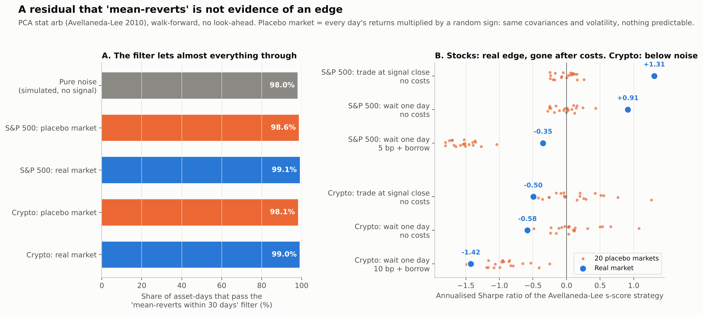
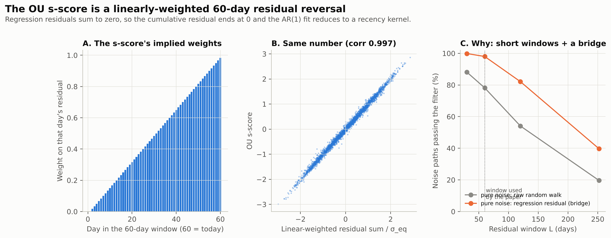
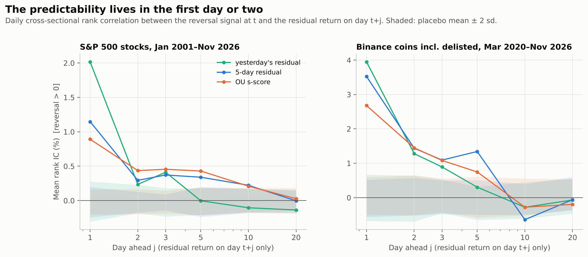
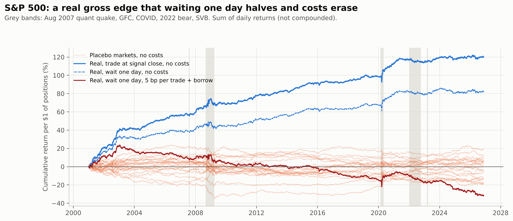
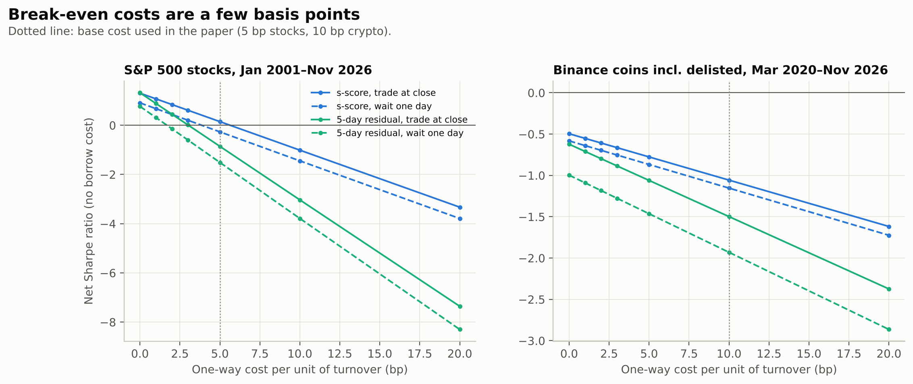
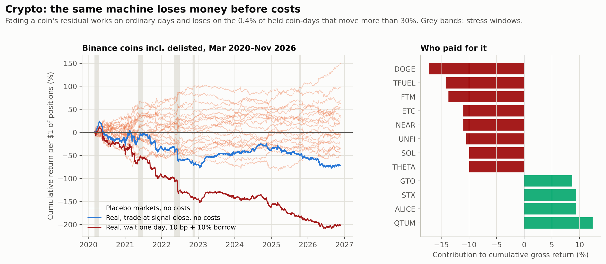
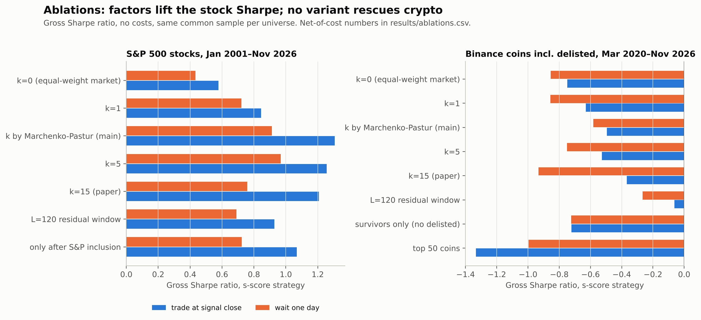

Working paper · Project 24
PCA statistical arbitrage against a placebo market, on 26 years of S&P 500 stocks and a delisting-complete crypto universe
Project 24 of 30 Quant Research Projects · Working paper, November 2026

Avellaneda and Lee (2010) is the textbook recipe for PCA statistical arbitrage. You strip each stock of its exposure to the top principal components and model the cumulative residual as an Ornstein–Uhlenbeck process. You trade only the residuals that the fit says revert within 30 days, using bands on a standardised "s-score". The OU fit and its filter are the part that looks most scientific. I test what they add by running the full walk-forward recipe on a real market and on a placebo market, where every day's cross-section of returns is multiplied by an independent random sign. That keeps every daily covariance matrix, the volatility path and the listing history exactly, and makes tomorrow unpredictable. I use two universes. The first is the 503 S&P 500 members of November 2026, from 2001 to 2026. The second is all 743 Binance USDT spot pairs, including the 217 that were later delisted, from 2020 to 2026.
Four results. (1) The filter passes noise. 99.1 % of stock-days and 99.0 % of coin-days pass the "reverts within 30 days" test, against 98.6 % and 98.1 % in the placebo and 98.0 % in pure simulated noise. Regression residuals sum to zero, so the cumulative residual is a Brownian bridge that ends at zero. A 60-day AR(1) fit then finds a median mean-reversion time of about 8 days in any data. (2) The s-score is a recency kernel. With the bridge ending at zero, the OU s-score equals a linearly weighted sum of the window's residuals (correlation 0.997). A plain 5-day residual z-score earns the same gross Sharpe ratio (1.32 vs 1.31). (3) In stocks the edge is real, but costs remove it. The strategy earns a gross Sharpe of 1.31 (95 % CI 0.90 to 1.76), against 0.00 ± 0.15 across 20 placebo markets (z = 8.6). A third of the edge sits in the first day: waiting one day cuts the Sharpe to 0.91. The break-even cost is 5.6 bp per unit of turnover, or 3.9 bp with the one-day wait. At a realistic 5 bp the net Sharpe is 0.07, or −0.35 with the wait. The gross Sharpe fell from 2.44 in 2001–2007 to 0.78 in 2020–2026. (4) In crypto the same machine does worse than noise. The gross Sharpe is −0.50 (CI −1.30 to +0.33), below all 20 placebos. Coin residuals do reverse at a one-to-five-day horizon (rank IC +2.7 % on day 1, t = 8.5). The book still loses because it fades the 0.4 % of held coin-days that move more than 30 %. With daily returns capped at ±10 %, the same positions have a gross Sharpe of +1.82. Building the placebo also needed two corrections. A within-quarter permutation leaked the real reversal back in (placebo Sharpe +0.81). A within-quarter bootstrap manufactured momentum (−3.23). Both are documented and unit-tested.
Statistical arbitrage on equity residuals goes back to Lehmann (1990) and Lo and MacKinlay (1990): stocks that fall relative to their peers over a few days tend to bounce back. Avellaneda and Lee (2010, "AL" below) turned this into the version taught today:
AL reported a Sharpe ratio of about 1.4 on US stocks from 1997 to 2007, and weaker results after 2002. The OU step gives the recipe its look of rigour: each trade is justified by a stock whose residual has been shown to mean-revert fast. This paper asks three questions about that step.
These questions come from project #11, whose title "Convergence Is Not Evidence" makes the same point for pairs. There, the share of trades that converge and the share of pairs passing a cointegration test were the same on a placebo market as on the real one. Project 24 brings the placebo test to the PCA version of stat arb. The other close relative is #18: it showed that three principal components explain the Treasury curve but hedge it badly. Here PCA is used as a residualiser, not as a hedge.
Hypotheses (written before the main runs; see the self-review for what that does and does not mean):
| Universe | Source | Assets | Signal sample | Notes |
|---|---|---|---|---|
| S&P 500 stocks | Yahoo Finance adjusted closes and dollar volume, fetched through a browser | 503 members of Nov 2026 (436 tradable on an average day) | Jan 2001 – 20 Nov 2026, 6,511 days | Survivor-picked; see Limitations. A "point-in-time additions" variant only lets a stock in after its S&P inclusion date. |
| Binance crypto | Binance public klines API, daily 00:00 UTC closes and quote volume | 743 USDT spot pairs; 594 after removing 26 stablecoins/fiat/gold tokens, 10 leveraged tokens and 113 tokenised stocks; 217 pairs are delisted, and their full history is kept | Mar 2020 – 22 Nov 2026, 2,458 days | The top 100 coins by 30-day median dollar volume are re-ranked monthly. Trading starts once 30 coins have a full year of history. |
The data files in data/ are the raw downloads (about 26 MB). src/data.py applies the exclusions and builds the
return panels. Delisted pairs matter. Binance keeps serving the price history of pairs it has delisted (LUNA,
FTT, BCC, ...), so the crypto universe is free of survivorship bias, which the equity universe cannot be. A
"survivors only" run measures the difference (section 5).
Stress windows covered: August 2007 quant quake, GFC (Sep 2008 – Mar 2009), COVID (Feb–Apr 2020), the 2022 bear market and the SVB month (Mar 2023) for stocks; the COVID crash, the May 2021 crash, the LUNA collapse (May–Jun 2022), the FTX collapse (Nov 2022) and the October 2025 liquidation cascade for crypto. Crypto has no 2008 because the market did not exist. Its own crashes are larger in residual terms than anything in the equity sample.
Walk-forward engine (src/engine.py). Every input to a position decided at the close of day t uses returns up
to t only.
ou = AL's s-score with the filter; ou_nf = the s-score without the
filter; res5 = the residual return of the last 5 days divided by its 60-day standard deviation, with the same
bands.Placebo market (engine.placebo, method signflip). Every day, the whole vector of returns is multiplied by
one random sign. Each day's covariance matrix (r rᵀ) is unchanged, so PCA sees the same factor structure. The same
holds for volatility clustering, fat tails in absolute value, listing and delisting dates and liquidity ranks. Any
way of predicting the sign of tomorrow's residual is gone. Drift and skewness are lost, which does not matter to a
book that is factor-neutral and holds both sides. 20 placebo markets per universe are run through the identical
pipeline. Section 7 explains why two more natural placebos were rejected.
Inference. Sharpe ratio CIs come from a stationary bootstrap (mean block 20 days, 1,000 draws). t-statistics are Newey–West. The real-vs-placebo test uses z = (SR_real − mean SR_placebo) / sd SR_placebo. Both families, real-vs-placebo (12 tests: 2 universes × 3 signals × 2 delays) and ablations (60 tests), are corrected with Holm. All comparisons inside a universe use one common sample (the latest start across its runs).
| Pass the 30-day filter | Median fitted mean-reversion time | |
|---|---|---|
| Pure noise, L = 60, intercept + 15 factors (simulated) | 98.0 % | 8.4 days |
| S&P 500 placebo markets (20) | 98.6 % (range 98.5–98.6) | 8.2 days |
| S&P 500 real | 99.1 % | 7.7 days |
| Crypto placebo markets (20) | 98.1 % (range 97.8–98.4) | 8.1 days |
| Crypto real | 99.0 % | 7.2 days |
Source: results/filter_real_vs_placebo.csv, results/theory_filter_null.csv.
Two mechanisms produce this (src/theory.py, figure 4C).
The filter only starts to bite with windows far longer than AL's: at L = 252 days, 40 % of noise paths pass. Dropping it changes nothing. The no-filter strategy has the same Sharpe to the second decimal (1.30 vs 1.31) and the same turnover. Real residuals are slightly faster than placebo ones (7.7 vs 8.2 days), so they do carry some real reversal. The filter cannot see the difference, because the 30-day threshold sits far above where both distributions live.

Write ε₁ … ε₆₀ for the window's residuals. Because they sum to zero, X₆₀ = 0, and the AR(1) fit's equilibrium m
is essentially the path's average level, X̄. Rearranging gives −X̄ = Σᵢ ((i − 1)/60) εᵢ. The s-score
(X₆₀ − m)/σ_eq is therefore a weighted sum of the window's residuals. The weights rise linearly from 0 for the
oldest day to 1 for today, divided by a volatility. On noise the correlation between the exact s-score and this
kernel is 0.997 (results/theory_kernel.csv). AL's centring of m across stocks is a constant shift.
So the s-score is a residual-reversal signal with a mean look-back of about 20 days. That horizon is a poor match for the data (figure 2).

The cross-sectional rank IC between a reversal signal at t and the residual return on one later day t + j
peaks on the first day and is gone by day 10–20 in both markets (results/ic_term_structure.csv). For stocks the
IC is 2.0 % for yesterday's residual alone (t = 16.5), 1.1 % for the 5-day residual and 0.9 % for the s-score. The
mean placebo IC is within 0.03 percentage points of zero at every horizon. The s-score spreads its weight over 60 days, while the signal
lives in the last few. It ends up holding positions for days after the information has decayed. As a trading
signal the plain 5-day z-score is as good: gross Sharpe 1.32 vs 1.31 for stocks. It trades twice as often,
though, so its break-even cost is lower (3.0 bp vs 5.6 bp). The OU machinery makes the signal slower and
therefore cheaper to trade. It does not make the signal better.
| S&P 500, Jan 2001 – Nov 2026 | Gross SR [95 % CI] | Placebo SR (mean ± sd) | z vs placebo | Break-even (bp) | Net SR at 5 bp + borrow |
|---|---|---|---|---|---|
| s-score + filter, trade at the signal close | 1.31 [0.90, 1.76] | −0.02 ± 0.15 | 8.6 | 5.6 | 0.07 |
| s-score + filter, wait one day | 0.91 [0.52, 1.34] | −0.01 ± 0.19 | 5.0 | 3.9 | −0.35 |
| 5-day residual z, trade at the signal close | 1.32 [0.93, 1.77] | −0.08 ± 0.14 | 10.0 | 3.0 | −0.93 |
| 5-day residual z, wait one day | 0.77 [0.38, 1.14] | −0.07 ± 0.16 | 5.2 | 1.7 | −1.59 |
Source: results/main_real_vs_placebo.csv. Holm-adjusted p < 0.001 for all four against the placebo. The
s-score book earns 4.7 % a year gross per $1 of positions at 3.6 % volatility and turns over 33 % of its
positions per day.

The placebo test rules out "it's all an artefact": the real edge sits 5 to 10 placebo standard deviations away from zero. The edge is also small next to its turnover. At 33 % turnover a day, every basis point of cost removes 0.8 % a year, so the 4.7 % gross becomes about zero at 5–6 bp. The cost sweep (figure 7) gives net Sharpe ratios of 1.07, 0.84, 0.61 and 0.15 at 1, 2, 3 and 5 bp (trading at the signal close). With the one-day wait they are 0.68, 0.44, 0.20 and −0.27.

Decay. Gross Sharpe ratios by era for the s-score at delay 0 (results/eras.csv) are 2.44 [1.61, 3.23] in
2001–2007, 0.73 [−0.77, 1.95] in 2008–2009, 1.27 [0.66, 1.90] in 2010–2019 and 0.78 [−0.01, 1.47] in 2020–2026.
Break-even costs went from 10 bp to 3.6 bp. That is the pattern AL already saw after 2002 and that project
#3 found for its own published signal: what remains is too thin for
anyone who pays retail costs.
Stress. The equity book was not a crisis casualty (results/stress_windows.csv). It gained 3.4 % over the GFC
window and 7.8 % from February to April 2020, about 4.9 sd of a normal period's P&L. Dispersion was huge and
residuals snapped back. It lost 2.9 % over the 2022 bear market, its worst stretch, and was flat in the August 2007
quant quake (+0.4 %). The 2007 unwind hit crowded, levered books. This one is unlevered, and its universe is today's
survivors, which may flatter 2007–2009 (see Limitations).

| Binance top 100, Mar 2020 – Nov 2026 | Gross SR [95 % CI] | Placebo SR (mean ± sd) | Rank among 20 placebos | Net SR at 10 bp + 10 % borrow |
|---|---|---|---|---|
| s-score + filter, trade at the signal close | −0.50 [−1.30, 0.33] | +0.15 ± 0.41 | below all 20 | −1.32 |
| s-score + filter, wait one day | −0.58 [−1.35, 0.24] | +0.12 ± 0.36 | below all 20 | −1.42 |
| 5-day residual z, trade at the signal close | −0.62 [−1.32, 0.13] | +0.05 ± 0.34 | below all 20 | −1.69 |
The paradox is that coin residuals do reverse, more strongly than stock residuals. The day-1 rank IC is 2.7 % for
the s-score (t = 8.5) and 4.0 % for yesterday's residual (t = 11.9), against 0.05 % ± 0.27 % in the placebos. The money is
lost elsewhere (results/crypto_tail_diagnostic.csv):
| Daily returns capped at | none | ±100 % | ±50 % | ±30 % | ±20 % | ±10 % |
|---|---|---|---|---|---|---|
| Gross Sharpe, same positions | −0.50 | −0.41 | −0.19 | +0.24 | +0.76 | +1.82 |
Only 0.44 % of the coin-days the book holds move by more than 30 %, and they decide the result. A rank IC counts a +300 % listing pump as one bad rank among a hundred. A dollar P&L counts it as 300 %. A reversal book in crypto is structurally short jump risk: it shorts what has just risen, and some of what has just risen keeps rising by multiples (DOGE, TFUEL, FTM, NEAR, SOL are the largest losers). It does not survive the LUNA collapse either: −27 % of capital in May–June 2022, its worst stress window and worse than any placebo path (placebo range −24 % to +27 %). Removing the delisted coins does not help: survivors only, gross SR −0.72. Neither does any choice of k, window or universe size (figure 6). Every crypto variant has a negative gross Sharpe, and none is significant after Holm.
The capped-return Sharpe of +1.82 is not a tradable result. It describes P&L that the book did not earn. It says where the loss is, not how to avoid it. A real fix would need a rule that sees the jump coming (volume, news, listings), which is outside this paper.

All on the same sample per universe, s-score strategy (results/ablations.csv).
| S&P 500 | Gross SR, trade at close | Gross SR, wait a day | Break-even bp (wait a day) | Net SR (wait a day, 5 bp) |
|---|---|---|---|---|
| k = 0 (residual vs equal-weight market) | 0.58 | 0.43 | 5.0 | −0.04 |
| k = 1 | 0.84 | 0.72 | 6.4 | +0.11 |
| k ≈ 7, Marchenko–Pastur (main) | 1.31 | 0.91 | 3.9 | −0.35 |
| k = 5 | 1.26 | 0.97 | 4.7 | −0.15 |
| k = 15 (AL) | 1.21 | 0.76 | 2.1 | −1.12 |
| L = 120 residual window | 0.93 | 0.69 | 4.8 | −0.11 |
| Only after S&P inclusion date | 1.07 | 0.72 | 3.3 | −0.44 |
I reviewed the first complete draft as a hostile referee would. Each point is followed by what was done.
test_permutation_placebo_leaks_real_reversal_bootstrap_does_not).results/placebo_versions.csv and reproduced by run_all.sh. The lesson for #11's method:
resampling days inside short blocks is not neutral for a strategy whose signal window is about as long as the
block.PCA statistical arbitrage has two parts. The residual and the reversal are real: in S&P 500 stocks they beat 20 placebo markets by 5–10 standard deviations before costs, over 26 years. The OU modelling around them is decoration. Its mean-reversion filter passes 98 % of pure noise, because regression residuals form a bridge, and its s-score is a 60-day linear recency kernel that a 5-day z-score matches. What is left is thin. The break-even cost is 4–6 bp and falling, a third of the edge is in the first day, and with a one-day wait and 5 bp costs the net Sharpe is below zero. In crypto, where residuals revert even more strongly in rank terms, the recipe does worse than noise. A reversal book is short the jumps that make up crypto returns.
The practical rule: when a stat-arb paper shows you that its residuals mean-revert, ask whether noise would have looked the same, and only then look at the P&L.
Cross-links: #8 (Marchenko–Pastur edge used to choose k), #11 (placebo-market method, refined here), #12 (break-even costs), #18 (PCA as a hedge vs as a residualiser). Projects #22 (purged cross-validation) and #23 (deflated Sharpe) take the multiple-testing question further, and #25 (Kalman hedge ratio) replaces the 60-day OLS betas.
pip install -r requirements.txt
./run_all.sh # ~25 min on 4 cores; writes results/*.csv and figures/*.png, then runs 15 unit tests
src/engine.py (walk-forward engine and placebos) · src/theory.py (noise simulation, kernel identity) ·
src/experiments.py (all specifications) · src/evaluate.py (tables) · src/diagnostics.py (crypto tails) ·
src/figures.py · tests/test_engine.py. Per-run outputs (results/runs*/) are rebuilt by the script and are
not committed.